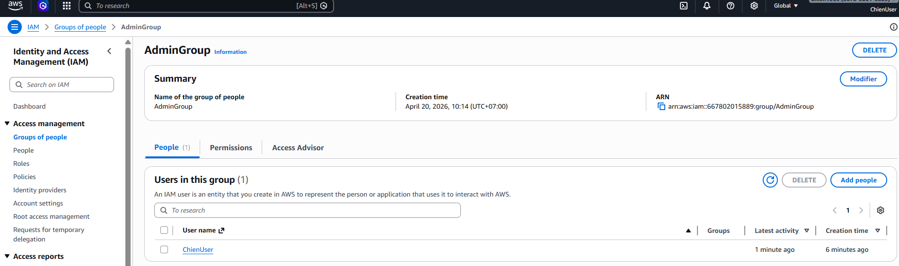
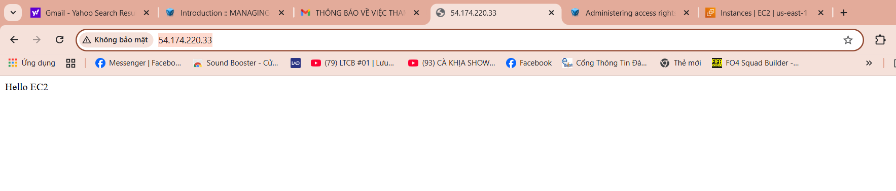

Created IAM AdminGroup and assigned AdministratorAccess. Created IAM user and added to group. Logged in successfully using IAM user.

Launched an EC2 instance using Amazon Linux. Configured security group to allow SSH and HTTP access. Connected to the instance via SSH and installed Apache web server. Successfully deployed a simple web page.


(To be updated)